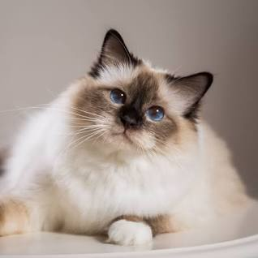
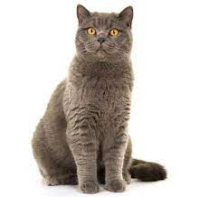
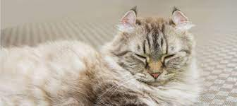

Categories of cats

Birman
Description
They're heavy-boned and sometimes look quite stocky.
They have strong legs that are in good proportion to their bodies.

British shorthair
Description
The British Shorthair is a medium to large sized, compact, chunky cat,
known for their attractive features and thick, plush fur.

American Curl
Description
These felines are very intelligent, playful, and curious,
and they form strong attachments to their owners.